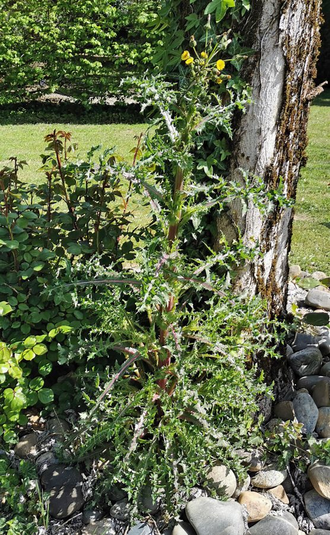

बड़ी दूधीPrickly Sow Thistle
Sonchus asper · Asteraceae · FLR-0229

- Scientific name वैज्ञानिक नाम
- Sonchus asper (L.) Hill
- Family कुल
- Asteraceae
- Hindi हिंदी
- बड़ी दूधी
- Local names स्थानीय नाम
- badi dudhi, bari dudhi, sow thistle, prickly sow thistle
- Status here यहाँ की स्थिति
- naturalized
- Movement आवागमन
- Resident, here all year
- Known from कहाँ दर्ज
- Others have published records from the Basti–Ayodhya districts बस्ती–अयोध्या के ज़िलों से दूसरों के प्रकाशित अभिलेख
- IUCN IUCN
- not evaluated
- Review समीक्षा
- audited and independently read
When to look कब देखें
Expected mainly in October, November, December, January, February, March. मुख्यतः अक्टूबर, नवंबर, दिसंबर, जनवरी, फ़रवरी, मार्च में अपेक्षित।
बड़ी दूधी / Prickly Sow Thistle
Sonchus asper (L.) Hill — Asteraceae
बड़ी दूधी (कंकरा) — ठंड के मौसम का एक सर्वव्यापी खरपतवार, जो बस्ती के गेहूँ और सरसों की फसलों की मेड़ों और नम क्षेत्रों में उगता है। इसके तने और पत्तियों से दूध जैसा, कड़वा रस निकलता है, जिससे इसे "दूधी" कहा जाता है। पत्तियों के किनारों पर तीक्ष्ण काँटे होते हैं। पीले फूलों के सिर सूरजमुखी जैसे दिखते हैं, लेकिन बहुत छोटे होते हैं। इसकी जड़ें मजबूत और गहरी होती हैं, जिससे यह सूखे में भी जीवित रह सकता है।
Quick Identification त्वरित पहचान
| Feature | Description |
|---|---|
| Form | Erect annual herb, 30–100 cm tall, milky sap in stem |
| Leaves | Lyrate-pinnatifid to dentate, 5–20 cm long, margins with sharp spines, blue-green |
| Flowers | Yellow, discoid flower heads, 1.5–2 cm diameter, arranged in corymbs |
| Fruit | Small, brown achenes with a white pappus (parachute-like bristles) for wind dispersal |
| Stem | Hollow, smooth, greenish or purplish, exudes white milky latex when broken |
| Odor | Bitter, unpleasant; latex bitter |
Field tip: Break the stem and white milky sap will flow. The spinose leaf margins are distinctive. Leaves are not as deeply cut as the smooth sow thistle (Sonchus oleraceus). The wind-borne seeds with their parachutes are visible in early spring.
हिंदी — कैसे पहचानें: तने से दूध निकले तो दूधी है। पत्तियों के किनारे खूँटेदार। सर्दी में फूल, बसंत में बीज उड़ते हैं।
Morphology आकारिकी
Biometrics (specimens from Basti fields):
| Feature | Measurement |
|---|---|
| Plant height | 30–100 cm |
| Leaf length | 5–20 cm |
| Flower head diameter | 1.5–2 cm |
| Achene length | 2–3 mm |
Stem and latex: Hollow, smooth, exuding copious white milky latex when broken. The latex tastes bitter and is a strong deterrent to herbivores.
Leaves: Alternate, lyrate-pinnatifid to dentate, deeply lobed and with sharp spines on the margins and midrib. Upper leaves smaller, less lobed.
Flowers: Yellow, in terminal corymbs, each flower head (capitulum) containing 30–50 florets. Blooming January to March.
Fruit: Small brown achenes, 2–3 mm long, with 5–6 prominent ribs and a white, feathery pappus that persists, aiding wind dispersal.
Behaviour & Ecology व्यवहार और पारिस्थितिकता
A winter annual native to the Mediterranean, now cosmopolitan in temperate regions. It thrives in nitrogen-rich soils of cultivated fields. Germinates in autumn with the onset of cool temperatures and moisture. Highly competitive with winter crops in early season growth. The milky sap confers toxicity, deterring most herbivores. It survives moderate frost and goes dormant in very cold winter, resuming growth in spring.
Life Cycle / Phenology जीवन चक्र
| Month / Season | Event |
|---|---|
| September–October | Seed germination after monsoon; seedling emergence |
| November–December | Vegetative growth; rosette formation |
| January–February | Stem elongation; flowering begins |
| February–March | Peak flowering and fruit maturation |
| April onwards | Plant senescence; seeds mature and disperse |
Winter annual; seeds dormant in summer.
हिंदी: अक्टूबर में अंकुरण, जनवरी-फरवरी में फूल, मार्च-अप्रैल में बीज।
Associated Species / Interactions संबंधित प्रजातियाँ
- Pollinators: Bees and flies on the yellow flowers.
- Herbivores: Few, due to latex toxicity.
- Winter crop competitors: Associates with pulses and wheat fields.
Pests and Diseases कीट और रोग
- Aphids occasionally colonize young plants.
- Powdery mildew in cool, humid conditions.
- Root rot in waterlogged soils.
Agricultural / Human Relevance कृषि प्रासंगिकता
Nutritional history: Young leaves, when not too bitter, have been eaten as a cooked green in parts of Europe and Asia, boiled with multiple water changes to remove bitterness.
Today: A significant winter weed of wheat and mustard fields in eastern UP. Competition is most serious in early growth stages (November–January). Once established, it outcompetes slow-growing winter crops. The deep taproot and persistent seed make control difficult. Early weeding (30–45 days after crop sowing) is the standard practice.
Control: Hand-weeding in early season; prevention through clean seed; selection of competitive crop varieties.
हिंदी: गेहूँ में खतरनाक खरपतवार। जनवरी तक निकाल देना चाहिए। गहरी जड़ों के कारण कठोर होता है।
Expected Locally स्थानीय रूप से अपेक्षित
Not a field record. Written from published accounts for eastern Uttar Pradesh. No confirmed local sighting yet — if you have seen it, that is what the atlas needs.
अभी तक स्थानीय पुष्टि नहीं। यह विवरण प्रकाशित स्रोतों से है, किसी अवलोकन से नहीं।
Expected in wheat, mustard, and winter vegetable fields of Basti district from October to March. Particularly common in nitrogen-rich, irrigated fields. GBIF holds published records from these districts.
Distribution वितरण
Global range: Native to the Mediterranean; now cosmopolitan in temperate and subtropical regions.
In India: Throughout the plains, particularly in cool-season crops.
In Uttar Pradesh: Very common in wheat and winter crop areas.
In Basti district / eastern UP: Common winter weed in rabi (winter) crops; widely distributed.
Research Questions शोध प्रश्न
- How quickly does Sonchus asper establish in newly sown wheat fields, and when is control most effective?
- क्या इसके दूध/लेटेक्स में कोई जहरीले रसायन होते हैं जो जानवरों को नुकसान पहुँचाते हैं? — Literature review with testing.
- Can children count the number of seeds on one plant and observe wind dispersal? — Simple seed-count study.
- How deep is the taproot, and can it regenerate from broken root pieces?
- What is the density of Sonchus asper in wheat fields at different stages of crop growth? — Field survey.
Similar Species मिलती-जुलती प्रजातियाँ
| Species | Key Difference | हिंदी |
|---|---|---|
| Sonchus oleraceus (Smooth Sow Thistle) | Leaves smoother, lobes more rounded, less spiny; plant more tender | मुलायम दूधी — पत्तियाँ कम काँटेदार |
| Lactuca scariola (Prickly Lettuce) | Leaves deeply lobed, midrib has spines only on underside; smaller flower heads | सलाद पत्ता — बहुत विभक्त पत्तियाँ |
Field rule: Prickly Sow Thistle has milky latex, spinose leaf margins, and yellow flower heads. Smooth Sow Thistle is less spiny and more tender. Prickly Lettuce has a spiny midrib on the underside only.
Taxonomy & Classification वर्गीकरण
Original description. Described by Carl Linnaeus in 1753 as Sonchus asper, establishing the species. The genus Sonchus was well-known to classical authors.
Subspecies. Monotypic.
Family and order placement. Order Asterales, family Asteraceae, subfamily Cichorioideae, tribe Sonchinae. Related to lettuce and other milk-weeds.
Phylogenetic notes. Sonchus is related to Lactuca, Tragopogon, and other wind-dispersed composites.
IUCN status rationale. Not evaluated. Cosmopolitan; not threatened.
Photo Gallery फोटो गैलरी
No photos yet — add field photos to media/species/prickly_sow_thistle/ and run node scripts/sync_photos.js.
Wanted photos:
- Plant in winter wheat field
- Leaf close-up showing spines
- Yellow flower heads
- Seeds with parachute at dispersal
References संदर्भ
- Linnaeus, C. (1753). Species Plantarum, Vol. 2, p. 793.
- Hooker, J.D. (1881). Flora of British India, Vol. 3.
- Duthie, J.F. (1903). Flora of the Upper Gangetic Plain.
- Yadav, R.P. & Malik, A. (1982). Weed flora of winter crops in Uttar Pradesh. Indian Journal of Agricultural Sciences, 52(8).
- Botanical Survey of India. State Flora Series: Flora of Uttar Pradesh. BSI, Kolkata.
- GBIF Occurrence Data — Sonchus asper (2026).
Source file: species/flora/crops_associated/prickly_sow_thistle.md